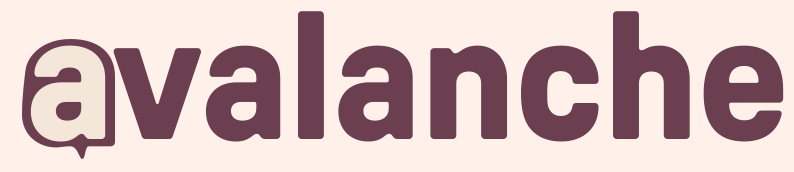
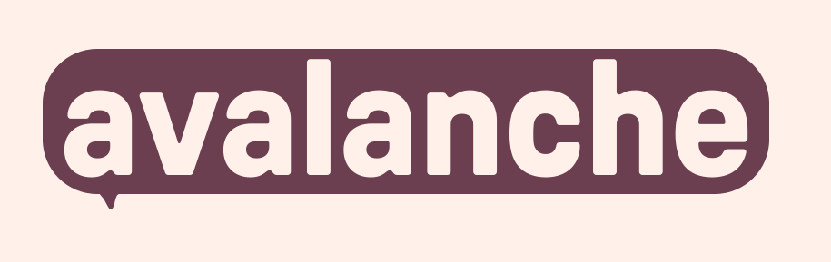

Bubble A vs Bubble Word
Two different objects
These aren't variations of the same logo. They're different logos doing different things.
Bubble A
"The first letter of avalanche is the icon." Typographic; the wordmark sits flat with a small bubble around its first letter.

Bubble Word
"Every wordmark is a chat message." The whole word lives inside a single big bubble — the logo IS a message.

How they shrink
Both at the sizes you'll actually use them. Watch the cream interior of Bubble Word and the cream-a counter of Bubble A.
A · BUBBLE A Bubble A
B · BUBBLE WORD Bubble Word
Each one next to the app icon
The big test: does the wordmark complement the icon, or fight it?
Bubble A + icon
Echo: the bubble shape appears in both, at different scales. Reads as one system.
Bubble Word + icon
Redundant: now there are two bubbles next to each other. The icon repeats what the wordmark is already saying.
As the brand mark in a site nav
The hardest test for any wordmark: does it hold its weight against other UI?
Bubble A as nav mark
Encrypted messaging. Built for movements.
Stay loud, stay safe. Avalanche is the secure organizing app for the work that has to happen now.
Bubble Word as nav mark
Encrypted messaging. Built for movements.
Stay loud, stay safe. Avalanche is the secure organizing app for the work that has to happen now.
As a sticker / button / patch
Organizers print things. A wordmark that looks great on a laptop sticker, hoodie, or door-knock zine matters.
Honest read: Bubble Word looks like a real campaign button. Bubble A looks like a logotype someone has put on a sticker.
As a social profile picture
Twitter, Mastodon, Bluesky — round 1:1 crops. Wordmarks tend to fail here; both deserve the test.
Neither wordmark wins at avatar size. This is the icon's job, period.
On a dark surface
As shipped, both are plum-on-cream. Each needs a dark-mode answer.
Bubble A on plum-900
The cream-bg of the SVG fights the dark surface. A real dark-mode export inverts the plum/cream — easy fix.
Bubble Word on plum-900
Worse problem: the bubble itself is plum, so it disappears into a plum bg. Dark mode needs a cream bubble or an outlined version.
What each costs
Stronger concepts cost more flexibility. Both are real choices.
Bubble A
- Plays beautifully next to the app icon — one system, two scales.
- Reads as a sophisticated logotype. The kind brand-design publications cover.
- Survives small sizes (down to ~120px before the counter fills in).
- Easy to re-master for dark mode (invert two fills).
- Doesn't shout. Will age well.
- Quieter — needs to be earned, not noticed.
- Doesn't read as "chat app" instantly to a cold audience.
- Less merch-friendly. Looks like a logotype on a sticker, not a button.
Bubble Word
- Confident, maximalist concept: the wordmark IS a chat message.
- Reads as "chat app" instantly, even without context.
- Made for merch. Looks like a real campaign button or patch.
- Higher recognition value as a silhouette — pill-with-tail is a distinct shape.
- Energetic, organizer-coded — matches the brand's stated personality.
- Redundant next to the app icon — two bubbles fighting each other.
- Pill shape, not bubble shape. The tail is small enough that it reads more as a hangnail than a chat tail.
- Massive vertical footprint. At 80px wide it's only 25px tall — the word is unreadable.
- Dark-mode and dark-bg use needs a separate cream-bubble version.
- Will polarize. Some will love it, some will think it looks like a button.
My pick
Bubble A is the logo. Bubble Word is a campaign asset.
The real question isn't which one's better. They're both good. The question is which one your brand system needs as the primary mark — the one stamped on every screen, every doc, every press mention.
Bubble A is built for the system. It pairs with the icon (echoes the bubble; doesn't repeat it). It survives at 120px. It works in body copy, in nav bars, in legal footers, in the App Store. It doesn't shout. The brand reveals itself on second glance, which is how good logos work.
Bubble Word is a moment, not a system. It's great. It feels like a movement. But it's a campaign asset, a hero, a Twitter cover photo, a t-shirt — the place you go when you want to announce. Right next to the app icon it becomes redundant; at small sizes it stops working; on a dark wallpaper it disappears. Those are real costs.
What I'd actually do:
— Ship Bubble A as the primary wordmark. Use it everywhere by default.
— Promote Bubble Word to a named brand asset: "The Avalanche Badge." Use it on stickers, organizer materials, hero banners, t-shirts, social cover photos, launch announcements. Anywhere you want to announce.
— Fix Bubble Word's execution before shipping it anywhere: enlarge the chat tail (3× current size), pull the corner radius down from 60 to ~40 so it reads as bubble not pill, and ship a cream-bubble dark-mode version.
This is how the best chat brands work. Signal has its glyph and its wordmark; Discord has its mascot and its wordmark — they don't try to do everything with one mark. You're not picking; you're casting two roles.